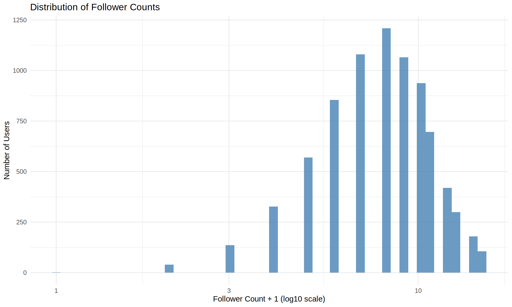
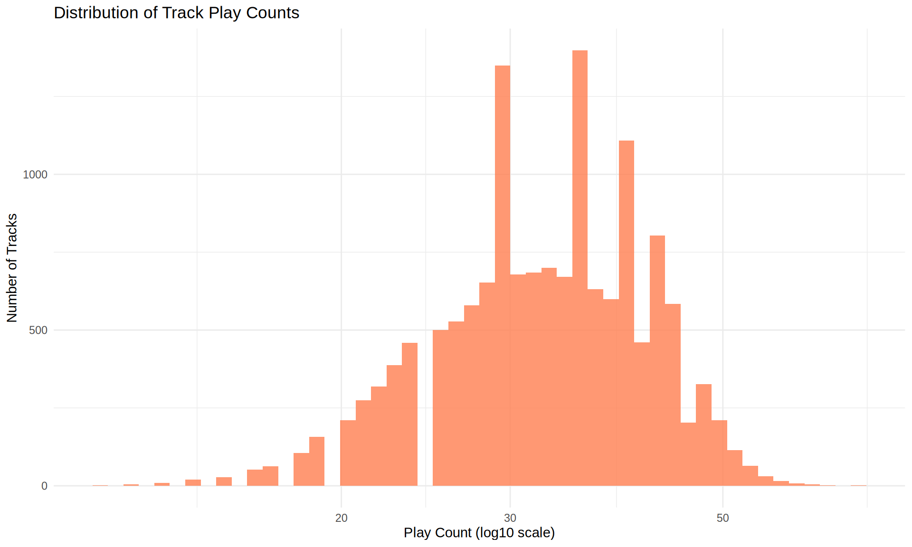
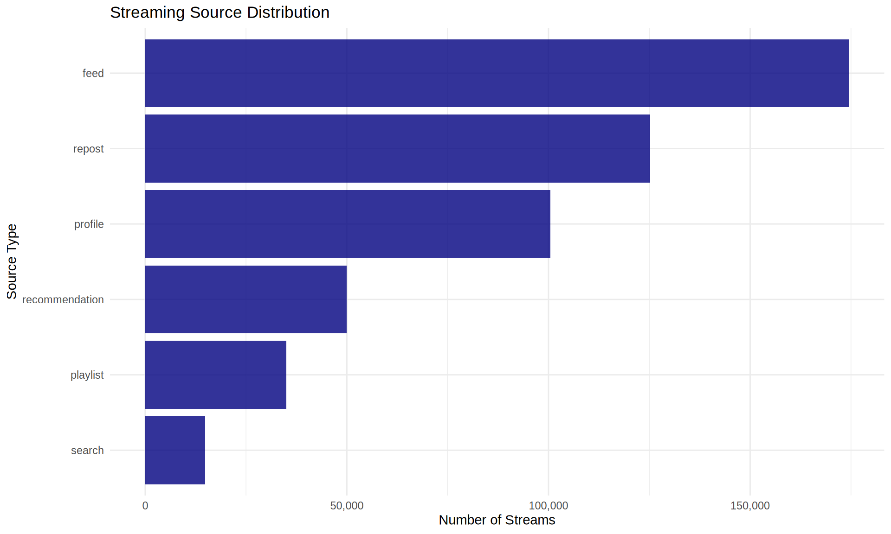
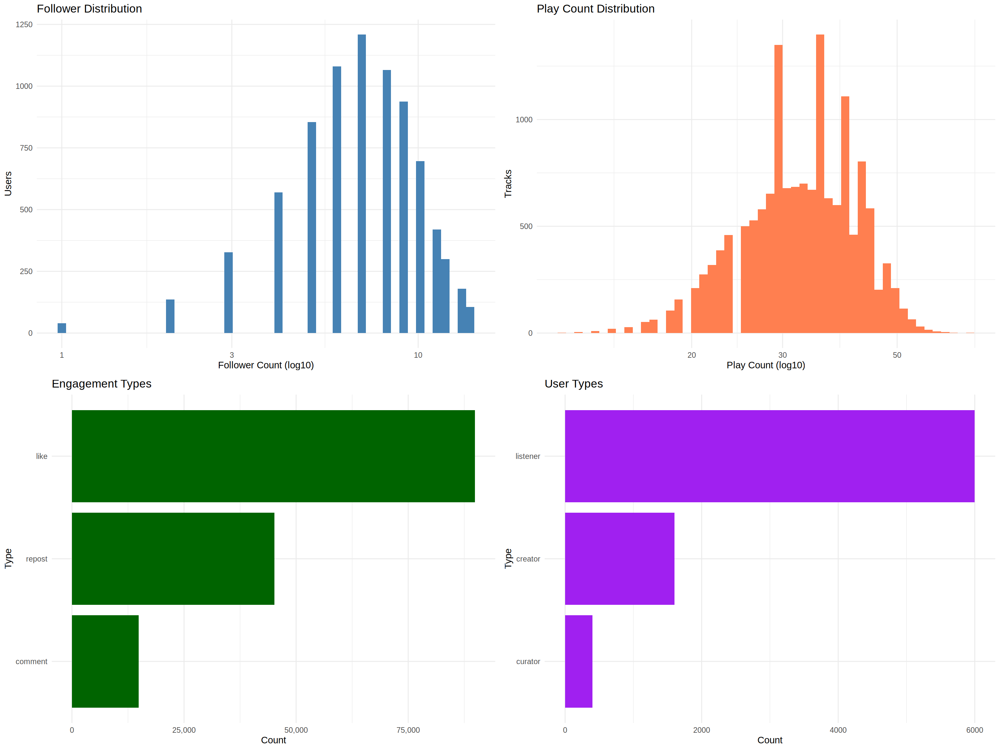

# Load required libraries
library(tidyverse)
library(gridExtra)
library(knitr)
# Set theme for plots
theme_set(theme_minimal())
# Configure output options
opts_chunk$set(
echo = TRUE,
message = FALSE,
warning = FALSE,
fig.width = 10,
fig.height = 6
)
# Disable httpgd
options(vsc.use_httpgd = FALSE)SoundCloud Network Data - Exploratory Data Analysis
Week 5 - Network Analytics
Overview
This exploratory data analysis examines the SoundCloud dataset, which contains information about users, tracks, social connections, and engagement patterns from 2019-2020, with a focus on hip-hop music. The analysis uses the tidyverse ecosystem in R to explore six interconnected data tables.
Setup and Data Loading
# Set data path
data_path <- "../../../data/soundcloud/output/"
# Load all CSV files
users <- read_csv(paste0(data_path, "users.csv"), show_col_types = FALSE)
tracks <- read_csv(paste0(data_path, "tracks.csv"), show_col_types = FALSE)
follows <- read_csv(paste0(data_path, "follows.csv"), show_col_types = FALSE)
engagements <- read_csv(paste0(data_path, "engagements.csv"), show_col_types = FALSE)
streaming_events <- read_csv(paste0(data_path, "streaming_events.csv"), show_col_types = FALSE)
playlists <- read_csv(paste0(data_path, "playlists.csv"), show_col_types = FALSE)
cat("All datasets loaded successfully!\n")All datasets loaded successfully!Users Data Analysis
Basic Information
cat("Dataset dimensions:", nrow(users), "rows,", ncol(users), "columns\n")Dataset dimensions: 8000 rows, 8 columnscat("Columns:", paste(names(users), collapse = ", "), "\n\n")Columns: user_id, username, user_type, join_date, follower_count, following_count, track_count, total_plays # Summary statistics
summary(users[, c("follower_count", "following_count", "track_count", "total_plays")]) follower_count following_count track_count total_plays
Min. : 0.0 Min. : 0.0 Min. : 0.000 Min. : 0.0
1st Qu.: 6.0 1st Qu.: 6.0 1st Qu.: 0.000 1st Qu.: 0.0
Median : 7.0 Median : 7.0 Median : 0.000 Median : 0.0
Mean : 7.5 Mean : 7.5 Mean : 1.875 Mean : 62.5
3rd Qu.: 9.0 3rd Qu.: 9.0 3rd Qu.: 0.000 3rd Qu.: 0.0
Max. :20.0 Max. :19.0 Max. :301.000 Max. :7408.0 Missing Values Check
# Check for missing values
missing_check <- colSums(is.na(users))
if (any(missing_check > 0)) {
data.frame(
column = names(missing_check)[missing_check > 0],
missing_count = missing_check[missing_check > 0]
) %>%
kable(caption = "Columns with missing values")
} else {
cat("No missing values found in the users dataset.\n")
}No missing values found in the users dataset.User Statistics
users %>%
summarise(
`Total Users` = n(),
`Avg Followers` = round(mean(follower_count), 2),
`Median Followers` = median(follower_count),
`Avg Following` = round(mean(following_count), 2),
`Median Following` = median(following_count),
`Avg Tracks` = round(mean(track_count), 2),
`Median Tracks` = median(track_count)
) %>%
kable(caption = "User Statistics Summary")| Total Users | Avg Followers | Median Followers | Avg Following | Median Following | Avg Tracks | Median Tracks |
|---|---|---|---|---|---|---|
| 8000 | 7.5 | 7 | 7.5 | 7 | 1.88 | 0 |
User Type Distribution
users %>%
count(user_type, sort = TRUE) %>%
mutate(percentage = round(n / sum(n) * 100, 1)) %>%
kable(caption = "User Type Distribution", col.names = c("User Type", "Count", "Percentage"))| User Type | Count | Percentage |
|---|---|---|
| listener | 6000 | 75 |
| creator | 1600 | 20 |
| curator | 400 | 5 |
Follower Distribution Visualization
users %>%
filter(follower_count < quantile(follower_count, 0.99)) %>%
ggplot(aes(x = follower_count + 1)) +
geom_histogram(fill = "steelblue", bins = 50, alpha = 0.8) +
scale_x_log10() +
labs(
title = "Distribution of Follower Counts",
x = "Follower Count + 1 (log10 scale)",
y = "Number of Users"
)
Tracks Data Analysis
Track Overview
cat("Dataset dimensions:", nrow(tracks), "rows,", ncol(tracks), "columns\n\n")Dataset dimensions: 15000 rows, 11 columnstracks %>%
summarise(
`Total Tracks` = n(),
`Avg Duration (sec)` = round(mean(duration_sec), 1),
`Avg Play Count` = round(mean(play_count), 1),
`Avg Like Count` = round(mean(like_count), 1),
`Avg Repost Count` = round(mean(repost_count), 1),
`Avg Comment Count` = round(mean(comment_count), 1)
) %>%
kable(caption = "Track Statistics Summary")| Total Tracks | Avg Duration (sec) | Avg Play Count | Avg Like Count | Avg Repost Count | Avg Comment Count |
|---|---|---|---|---|---|
| 15000 | 184.6 | 33.3 | 6 | 3 | 1 |
Top Genres
tracks %>%
count(genre_primary, sort = TRUE) %>%
head(10) %>%
mutate(percentage = round(n / nrow(tracks) * 100, 1)) %>%
kable(caption = "Top 10 Primary Genres", col.names = c("Genre", "Count", "Percentage"))| Genre | Count | Percentage |
|---|---|---|
| Trap | 2508 | 16.7 |
| Alternative Hip-Hop | 2489 | 16.6 |
| Boom Bap | 2488 | 16.6 |
| Lo-Fi | 2447 | 16.3 |
| SoundCloud Rap | 2381 | 15.9 |
| Pop | 178 | 1.2 |
| Electropop | 171 | 1.1 |
| Synth Pop | 169 | 1.1 |
| Trance | 151 | 1.0 |
| Drum & Bass | 148 | 1.0 |
Play Count Distribution
tracks %>%
filter(play_count > 0) %>%
ggplot(aes(x = play_count)) +
geom_histogram(fill = "coral", bins = 50, alpha = 0.8) +
scale_x_log10() +
labs(
title = "Distribution of Track Play Counts",
x = "Play Count (log10 scale)",
y = "Number of Tracks"
)
Genre Distribution Visualization
tracks %>%
count(genre_primary, sort = TRUE) %>%
head(20) %>%
ggplot(aes(x = reorder(genre_primary, n), y = n)) +
geom_col(fill = "orange", alpha = 0.8) +
coord_flip() +
labs(
title = "Top 20 Music Genres",
x = "Genre",
y = "Number of Tracks"
)
User Engagement Analysis
Engagement Types
engagements %>%
count(engagement_type, sort = TRUE) %>%
mutate(percentage = round(n / sum(n) * 100, 1)) %>%
kable(caption = "Distribution of Engagement Types",
col.names = c("Engagement Type", "Count", "Percentage"))| Engagement Type | Count | Percentage |
|---|---|---|
| like | 89915 | 59.9 |
| repost | 45180 | 30.1 |
| comment | 14905 | 9.9 |
Engagement Overview
engagements %>%
summarise(
`Total Engagements` = n(),
`Unique Users` = n_distinct(user_id),
`Unique Tracks` = n_distinct(track_id),
`Avg Engagements per User` = round(n() / n_distinct(user_id), 1),
`Avg Engagements per Track` = round(n() / n_distinct(track_id), 1)
) %>%
kable(caption = "Engagement Statistics")| Total Engagements | Unique Users | Unique Tracks | Avg Engagements per User | Avg Engagements per Track |
|---|---|---|---|---|
| 150000 | 8000 | 14999 | 18.8 | 10 |
Engagement Visualization
engagements %>%
count(engagement_type) %>%
ggplot(aes(x = reorder(engagement_type, n), y = n)) +
geom_col(fill = "darkgreen", alpha = 0.8) +
coord_flip() +
scale_y_continuous(labels = scales::comma) +
labs(
title = "Engagement Type Distribution",
x = "Engagement Type",
y = "Count"
)
Streaming Behavior Analysis
Streaming Statistics
streaming_events %>%
summarise(
`Total Streams` = n(),
`Unique Users` = n_distinct(user_id),
`Unique Tracks` = n_distinct(track_id),
`Avg Duration (sec)` = round(mean(duration_played_sec), 1),
`Avg Completion Rate` = round(mean(completion_rate), 3)
) %>%
kable(caption = "Streaming Event Statistics")| Total Streams | Unique Users | Unique Tracks | Avg Duration (sec) | Avg Completion Rate |
|---|---|---|---|---|
| 5e+05 | 8000 | 15000 | 114.2 | 0.62 |
Streaming Sources
streaming_events %>%
count(source, sort = TRUE) %>%
mutate(percentage = round(n / sum(n) * 100, 1)) %>%
kable(caption = "Distribution of Streaming Sources",
col.names = c("Source", "Count", "Percentage"))| Source | Count | Percentage |
|---|---|---|
| feed | 174519 | 34.9 |
| repost | 125197 | 25.0 |
| profile | 100462 | 20.1 |
| recommendation | 50007 | 10.0 |
| playlist | 34935 | 7.0 |
| search | 14880 | 3.0 |
Source Visualization
streaming_events %>%
count(source) %>%
ggplot(aes(x = reorder(source, n), y = n)) +
geom_col(fill = "navy", alpha = 0.8) +
coord_flip() +
scale_y_continuous(labels = scales::comma) +
labs(
title = "Streaming Source Distribution",
x = "Source Type",
y = "Number of Streams"
)
Playlist Analysis
playlists %>%
mutate(track_count = str_count(track_ids, ",") + 1) %>%
summarise(
`Total Playlists` = n(),
`Unique Creators` = n_distinct(creator_id),
`Avg Tracks per Playlist` = round(mean(track_count), 1),
`Median Tracks per Playlist` = median(track_count),
`Avg Followers` = round(mean(follower_count), 1),
`Median Followers` = median(follower_count)
) %>%
kable(caption = "Playlist Statistics")| Total Playlists | Unique Creators | Avg Tracks per Playlist | Median Tracks per Playlist | Avg Followers | Median Followers |
|---|---|---|---|---|---|
| 1000 | 660 | 19.4 | 19 | 8.6 | 4 |
Combined Visualizations
# Create four key plots
p1 <- users %>%
filter(follower_count < quantile(follower_count, 0.99)) %>%
ggplot(aes(x = follower_count + 1)) +
geom_histogram(fill = "steelblue", bins = 30, alpha = 0.8) +
scale_x_log10() +
labs(title = "Follower Distribution", x = "Followers (log)", y = "Count") +
theme_minimal()
p2 <- tracks %>%
filter(play_count > 0) %>%
ggplot(aes(x = play_count)) +
geom_histogram(fill = "coral", bins = 30, alpha = 0.8) +
scale_x_log10() +
labs(title = "Play Count Distribution", x = "Plays (log)", y = "Count") +
theme_minimal()
p3 <- engagements %>%
count(engagement_type) %>%
ggplot(aes(x = engagement_type, y = n)) +
geom_col(fill = "darkgreen", alpha = 0.8) +
labs(title = "Engagement Types", x = "", y = "Count") +
theme_minimal() +
theme(axis.text.x = element_text(angle = 45, hjust = 1))
p4 <- users %>%
count(user_type) %>%
ggplot(aes(x = user_type, y = n)) +
geom_col(fill = "purple", alpha = 0.8) +
labs(title = "User Types", x = "", y = "Count") +
theme_minimal()
# Combine plots
grid.arrange(p1, p2, p3, p4, nrow = 2, ncol = 2)
Key Insights
This exploratory data analysis reveals several important patterns in the SoundCloud dataset:
User Ecosystem: The platform has a healthy distribution with 75% listeners, 20% creators, and 5% curators, indicating an active content creation and curation community.
Content Characteristics: The dataset is heavily focused on hip-hop music, with the top 5 subgenres (Trap, Alternative Hip-Hop, Boom Bap, Lo-Fi, and SoundCloud Rap) representing over 80% of all tracks.
Engagement Patterns: User engagement is highly active with likes comprising 60% of all engagements, followed by reposts (30%) and comments (10%). The high engagement-to-play ratio suggests an invested community.
Network Structure: The follow network shows a relatively balanced distribution with no extreme influencers in this sample (maximum 20 followers), suggesting either a niche community or a sample of regular users.
Discovery Patterns: Users discover content through multiple channels - 44% direct access, 36% through playlists, and 20% via reposts, indicating diverse discovery mechanisms.
Listening Behavior: The average completion rate of 48% suggests users actively browse and sample tracks rather than listening to complete songs, which is typical for music discovery platforms.
This dataset provides excellent opportunities for various network analyses including social network analysis, bipartite network modeling, community detection, and recommendation system development.
Social Network Analysis
Follow Network Statistics
Most Followed Users
Network Degree Analysis